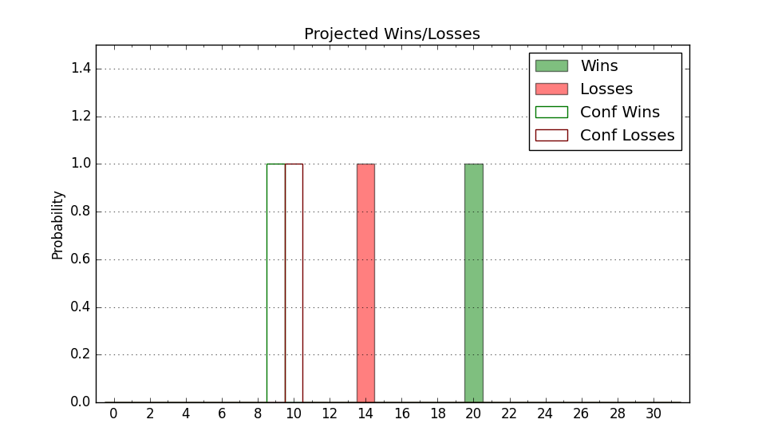

| Home | Game Probabilities | Conferences | Preseason Predictions | Odds Charts | NCAA Tournament |
| City: | Austin, Texas | |
| Conference: | Big 12 (7th)
| |
| Record: | 9-9 (Conf) 20-12 (Overall) | |
| Ratings: | Comp.: 20.7 (23rd) Net: 20.7 (23rd) Off: 117.6 (27th) Def: 96.9 (34th) SoR: 66.4 (40th) |
| Remaining | ||||||
|---|---|---|---|---|---|---|
| Date | Opponent | Win Prob | Pred. | |||
| Previous | Game Score | |||||
| Date | Opponent | Win Prob | Result | Off | Def | Net |
| 11/6 | Incarnate Word (340) | 99.0% | W 88-56 | -13.7 | 12.6 | -1.2 |
| 11/10 | Delaware St. (307) | 98.1% | W 86-59 | -4.8 | 4.7 | -0.1 |
| 11/15 | Rice (220) | 95.7% | W 80-64 | -6.9 | 1.0 | -6.0 |
| 11/19 | (N) Louisville (189) | 90.7% | W 81-80 | -5.9 | -21.5 | -27.4 |
| 11/20 | (N) Connecticut (2) | 19.4% | L 71-81 | -1.7 | -1.6 | -3.3 |
| 11/26 | Wyoming (154) | 92.6% | W 86-63 | 3.6 | 5.9 | 9.4 |
| 11/30 | Texas St. (219) | 95.7% | W 77-58 | -6.3 | 1.7 | -4.6 |
| 12/6 | @Marquette (15) | 26.3% | L 65-86 | -14.5 | -3.1 | -17.6 |
| 12/9 | Houston Baptist (356) | 99.4% | W 77-50 | -29.5 | 14.5 | -15.0 |
| 12/16 | (N) LSU (88) | 74.5% | W 96-85 | 16.4 | -13.8 | 2.6 |
| 12/22 | Tex A&M Corpus Chris (188) | 94.7% | W 71-55 | -11.8 | 8.4 | -3.4 |
| 12/29 | UNC Greensboro (129) | 90.7% | W 72-37 | -6.4 | 38.6 | 32.1 |
| 1/1 | UT Arlington (130) | 90.7% | W 79-62 | 0.6 | 7.0 | 7.6 |
| 1/6 | Texas Tech (25) | 65.3% | L 67-78 | -15.3 | -8.8 | -24.1 |
| 1/9 | @Cincinnati (39) | 40.6% | W 74-73 | 6.2 | 5.5 | 11.7 |
| 1/13 | @West Virginia (134) | 75.1% | L 73-76 | -17.3 | -3.8 | -21.1 |
| 1/17 | UCF (54) | 76.3% | L 71-77 | -2.4 | -19.5 | -21.9 |
| 1/20 | Baylor (12) | 52.0% | W 75-73 | 16.3 | -10.8 | 5.5 |
| 1/23 | @Oklahoma (42) | 41.3% | W 75-60 | 9.4 | 19.4 | 28.8 |
| 1/27 | @BYU (13) | 24.2% | L 72-84 | 9.4 | -13.6 | -4.3 |
| 1/29 | Houston (1) | 28.4% | L 72-76 | 2.2 | 0.4 | 2.6 |
| 2/3 | @TCU (29) | 37.7% | W 77-66 | 12.1 | 7.4 | 19.4 |
| 2/6 | Iowa St. (5) | 44.5% | L 65-70 | -0.2 | -5.5 | -5.8 |
| 2/10 | West Virginia (134) | 91.1% | W 94-58 | 14.6 | 12.0 | 26.6 |
| 2/17 | @Houston (1) | 10.4% | L 61-82 | -1.0 | -12.1 | -13.1 |
| 2/19 | Kansas St. (73) | 81.1% | W 62-56 | -20.0 | 14.7 | -5.3 |
| 2/24 | @Kansas (20) | 31.5% | L 67-86 | -5.2 | -13.4 | -18.7 |
| 2/27 | @Texas Tech (25) | 35.6% | W 81-69 | 11.4 | 14.0 | 25.4 |
| 3/2 | Oklahoma St. (113) | 88.8% | W 81-65 | 11.1 | -0.1 | 11.0 |
| 3/4 | @Baylor (12) | 24.1% | L 85-93 | 14.8 | -12.4 | 2.4 |
| 3/9 | Oklahoma (42) | 70.5% | W 94-80 | 25.7 | -13.2 | 12.5 |
| 3/13 | (N) Kansas St. (73) | 69.9% | L 74-78 | -3.8 | -11.9 | -15.7 |
| Stats & Trends | |||||
|---|---|---|---|---|---|
| Current | Day | Week | Month | Season | |
| Composite | 20.7 | -0.0 | -0.4 | +0.3 | -3.1 |
| Comp Rank | 23 | +2 | -- | +3 | -11 |
| Net Efficiency | 20.7 | -0.0 | -0.4 | +0.3 | -- |
| Net Rank | 23 | +2 | -- | +3 | -- |
| Off Efficiency | 117.6 | +0.0 | -0.1 | +1.4 | -- |
| Off Rank | 27 | +1 | -- | +4 | -- |
| Def Efficiency | 96.9 | -0.1 | -0.3 | -1.1 | -- |
| Def Rank | 34 | -- | -3 | -1 | -- |
| SoS Rank | 55 | -4 | -5 | +16 | -- |
| Exp. Wins | 20.0 | -- | -- | +0.6 | -1.7 |
| Exp. Conf Wins | 9.0 | -- | -- | +0.6 | -1.6 |
| Conf Champ Prob | 0.0 | -- | -- | -0.0 | -11.8 |

| Advanced Stats | ||
|---|---|---|
| Stat | Value | Rank |
| Off Eff FG % | 0.567 | 21 |
| Off Ast Ratio | 0.180 | 24 |
| Off ORB% | 0.322 | 64 |
| Off TO Rate | 0.132 | 71 |
| Off FT Ratio | 0.316 | 214 |
| Def Eff FG % | 0.466 | 55 |
| Def Ast Ratio | 0.119 | 26 |
| Def ORB% | 0.246 | 49 |
| Def TO Rate | 0.164 | 59 |
| Def FT Ratio | 0.320 | 169 |